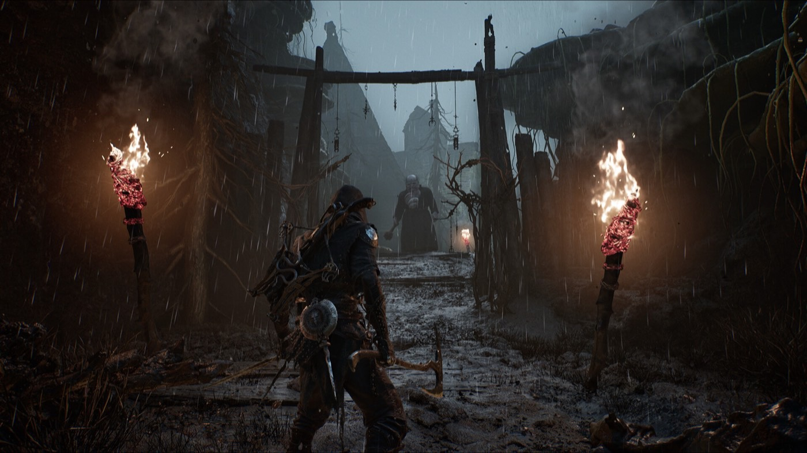

Systems
Systems, currencies and PC problems
The mechanics that cost people the most time, plus the launch-window PC issues. This is also where the worst misinformation lives, so the markers matter more here than anywhere else.

Combat and progression
Launch-window problems
Beacons do two jobs
Beacons are checkpoints and fast travel nodes. Some also have a dungeon underneath that can be cleansed for Ova — the primary objective currency — plus resources and Glimpse.Unconfirmed Not every Beacon has one.
Fast travel does not unlock until you have siphoned six Ova back at the Marrow Keep.Unconfirmed Until then the Beacon network is your route map, so light every one you walk past.
A warning about this corner of the internet
One site currently ranking for several of these queries publishes fabricated content. It lists boss names that appear in no other source, and its own pages contradict each other on whether forcing DirectX 11 fixes stutter or causes crashes. We are not linking it. If a guide gives you a boss name you cannot find on Game8, Fextralife or GameSpot, close the tab.
Where this comes from
Every claim above carries a marker. These are the sources behind them, graded by how directly they touch the retail build.
- games.gg — Beginner's guide UnconfirmedBeacon dual role, Ova as objective currency, six-Ova fast travel unlock
- TheGamer — Beginner tips TestedCombat pacing, Gloom recovery as a core early skill